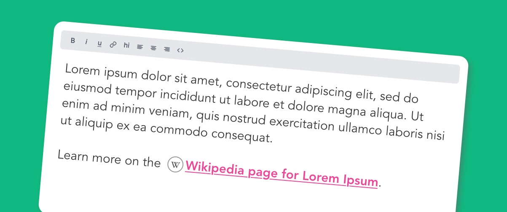
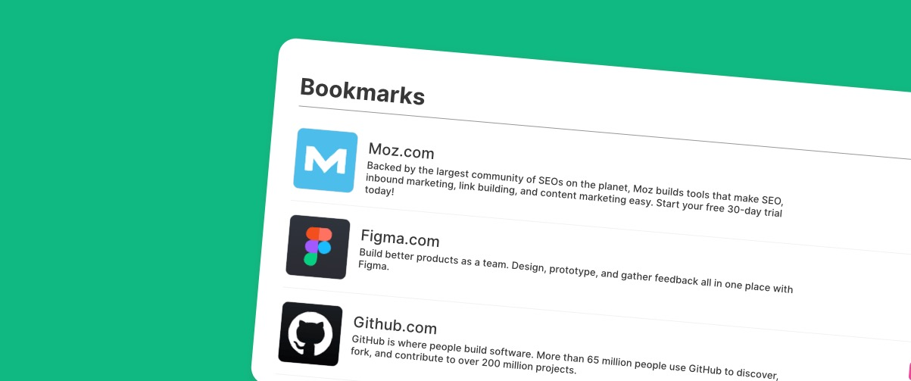

Get any site's favicon with
Icon Horse
Confidently use Icon Horse and get bulletproof favicons.
In case none can be found you will be provided with fallback
favicons!
So how could I use IconHorse?

Styled links
Visually inform your user of where the link will take them with an icon

Dashboards
Make your dashboard display prettier by showing icons of all the sites the user sees.

Default avatars
Display icons for users based on the @domain.com of their email address.
Click here to start now!